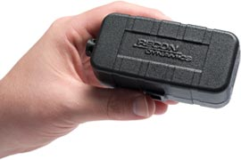

The beauty of the RECON solution is in its simplicity. ViewPort Wireless establishes a service area, and all you do is tag your assets and configure the alerts you want to receive using a standard web browser.
Available Asset Tags
Asset Tracker
Asset Tracker – Attach to physical assets, like vehicles, equipment, motors, doors, pumps and virtually any external sensor. They are waterproof and have a battery that can go up to two years before recharging.
Personal Tracker
Personal Tracker – These small, light weight tags are designed to be carried on a belt or in a purse or briefcase. They have a removable belt clip and a panic button that can be configured to send a custom message to the recipients you choose.
WaterWays™ End-point

WaterWays™ End-point – These potted waterproof tags are specially designed for reading water meters, yet also provide backflow detection, leak detection and much more.
Alert Messages for Assets
Receive instant notifications if an asset begins to move, or stops moving. Receive a text message when a door opens after hours or when someone passes through a room. Receive an alert when the temperature of a refrigerator or freezer rises to an unsafe level or when a server room begins to overheat.
Set your own custom alerts for each asset so you can be notified when a condition has occurred. Receive alerts directly to your mobile phone and e-mail. Set alerts based on:
- Temperature
- Motion
- Open/close
- Accumulated operating hours
- Location (for service areas which support location services)
- And more…
Each alert can be based on the day of the week and time of day.
Browser Based Software
There is no software to buy, no software maintenance fees, and no protracted integration process.
The user software includes a feature-rich, easy-to-use web-based platform that is used to manage asset tags and configure event alerts.
Tracking and monitoring data is available online and can easily be integrated into a user’s customized business systems.
Use any modern browser to access all features of the RECON system.
RECON also provides a free iPhone application which can be used to configure, monitor and track tags.
The RECON system offers a wide variety of configuration options. Read more on the Functions to get a glimpse of the system's flexibility.